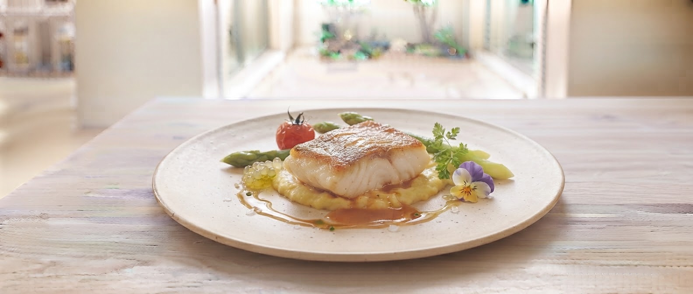
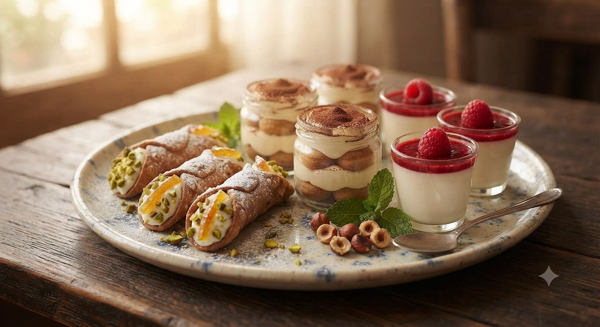

シャッターを切る音さえ、ここでは無粋。
素材の弾ける音、ソムリエが注ぐワインの揺らぎ。
ただ目の前の一皿に、心すべてを傾ける贅沢。
「お料理の写真はご遠慮ください」
今時、不親切に聞こえるかもしれません。
しかし、私たちの「こだわり」は、その瞬間にしか存在しません。
香りが立ち上る瞬間。ソースが舌に触れる温度。
その感動をカメラのレンズで遮ってほしくないのです。
店主とソムリエ、夫婦二人三脚で守り抜く、
山形の旬を五感で味わう「沈黙の贅」をご堪能ください。

※実物はあなたの目でお確かめください
地元山形で水揚げされた鮮魚を、絶妙な火加減で。ナイフを入れた瞬間に溢れ出す旨みと、地元農家から届く色鮮やかな旬野菜。 ソムリエが厳選した白ワインとのマリアージュは、まさに「家では絶対食べられない」至福のひとときです。
「淡々と厨房で働く姿は、まさに職人。しかしその奥には、溢れんばかりの情熱が。 地元山形の地産地消にこだわり、アレルギーへの配慮も欠かしません。」
「話しみある接客で迎えてくれる奥様は、確かな知識を持つソムリエ。 お客様の好みに合わせ、その日の料理に最も寄り添う一杯を提案します。」
「牛肉はナイフがいらない柔らかさで、お野菜もたっぷり。デザートのケーキがサッパリした甘さでコーヒーとベストマッチでした。」
「お家では絶対食べれない味が食べたくて訪問。いさきとエビのポワレ、お腹も大満足。デザートプレートが素敵でした！」
「写真は厳禁ですが、その分じっくり味わえます。一品一品をアルコールと共に楽しめる方には、ぜひおすすめしたい名店です。」

旬の果実とパティシエ顔負けの繊細な甘味。
コースを締めくくるこの一皿のために通うお客様も少なくありません。
ランチコースをご利用の皆様へ、心を込めてご提供いたします。
「写真は撮れないけれど、今日いただいた至福のメニューや食材の背景を持ち帰れたら――」
そんなお客様のひそかな願いから生まれた、ボートン独自の新しいおもてなしのカタチです。
※準備が整い次第、順次スタートいたします。どうぞお楽しみに。
山形県山形市本町2丁目4-20
定休日：日曜日
023-625-1411
写真撮影はご遠慮いただいております